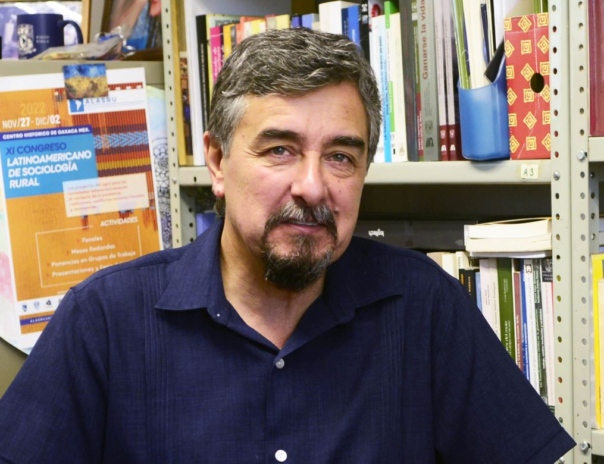
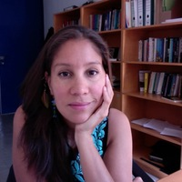
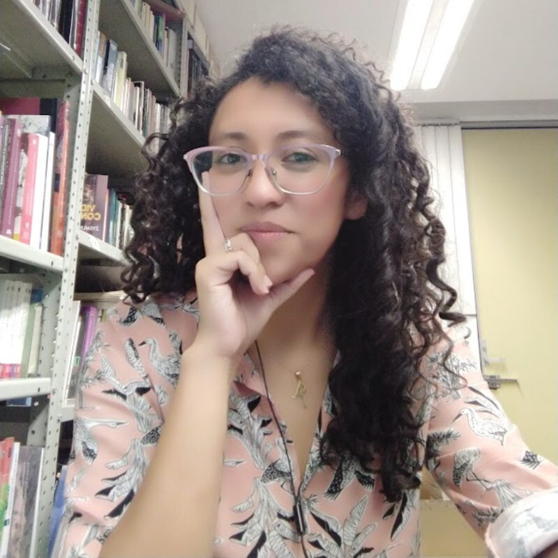

Conoce a los investigadores que forman parte del Proyecto Tlaxcala-Puebla y sus áreas de especialización.

Instituto de Investigaciones Antropológicas (IIA) - UNAM
Es investigador titular "C" en el Instituto de Investigaciones Antropológicas (IIA) de la Universidad Nacional Autónoma de México (UNAM). Entre sus líneas de investigación destacan: el estudio de las transformaciones rurales explorando la reconfiguración de los modos de vida y la relación entre las comunidades y sus territorios; el acceso a los recursos naturales y la globalización en distintas poblaciones de México; la relación entre la economía productiva y laboral rural; los cambios socioambientales; la gestión del agua y conflictos socioambientales; y la etnografía del poder y las estrategias de adaptación de las comunidades ante fenómenos como la precarización del campo, la crisis hídrica y los efectos de procesos globales en las poblaciones rurales, especialmente en la Cuenca Atoyac-Zahuapan (Región Tlaxcala-Puebla).
Es doctor en Antropología por la UNAM, maestro en Ciencias Sociales por la Facultad Latinoamericana de Ciencias Sociales (FLACSO-México) y licenciado en Antropología Social por la Universidad de Chile. A lo largo de su carrera ha sido coordinador del Programa de Posgrado en Antropología de la UNAM, ha liderado múltiples proyectos de investigación sobre el impacto del desarrollo y las políticas ambientales en comunidades campesinas y pueblos rurales en el Seminario de Investigación “Antropología, poder y ruralidades”, espacio de formación académica que ha conducido la realización de varias tesis. Actualmente es Coordinador del Seminario Universitario de Estudios Rurales.
Ha recibido el Premio Fray Bernardino de Sahagún en el área de Etnología y Antropología Social por su investigación sobre el río Nazas, y es miembro del Sistema Nacional de Investigadores, de la Academia Mexicana de Ciencias, de la Asociación Mexicana de Estudios Rurales y de la Asociación Latinoamericana de Sociología Rural.
Investigar los efectos socioterritoriales de la gentrificación y turistización rural, la precarización laboral y la gestión del agua en la región Tlaxcala-Puebla, abordando las tensiones entre conservación ambiental y desarrollo económico.

Instituto de Investigaciones Antropológicas (IIA) - UNAM
Paola Velasco Santos es Investigadora Titular "A" en el Instituto de Investigaciones Antropológicas (IIA) de la Universidad Nacional Autónoma de México (UNAM). Obtuvo su doctorado en Antropología por la Facultad de Filosofía y Letras de la UNAM en 2014, la maestría en Estudios Regionales por el Instituto de Investigaciones José María Luis Mora en 2007 y la licenciatura en Antropología con especialización en antropología cultural por la Universidad de las Américas, Puebla, en 2005.
Su labor académica se centra en la ecología política, la antropología socioambiental y los estudios rurales. Ha publicado y co-editado libros sobre la cuestión socioambiental, así como escrito diversos artículos académicos relacionados con la política-ambiental de la región. Entre sus obras destaca "Ríos de Contradicción. Contaminación, ecología política y sujetos rurales en Natívitas, Tlaxcala", que recibió en 2018 el Premio INAH Fray Bernardino de Sahagún a la mejor investigación en antropología social y etnología.
Además, en 2015 fue galardonada con la Beca para Mujeres en las Humanidades y las Ciencias Sociales, otorgada por la Academia Mexicana de Ciencias. Como docente, imparte cursos en el Posgrado de Antropología de la UNAM, abordando temas como conflictos y problemas socioambientales, ecología política y la relación entre antropología y medio ambiente. También participa en la licenciatura en Antropología de la Facultad de Ciencias Políticas y Sociales de la UNAM.
Investiga las dinámicas socioambientales y económicas en comunidades rurales de la región, enfocándose en problemáticas como la contaminación hídrica, la precarización laboral y las estrategias de resistencia comunitaria ante los desafíos impuestos por la globalización y las políticas ambientales.
Centro Regional de Investigaciones Multidisciplinarias (CRIM) - UNAM
Es Técnica Académica Titular “A” de Tiempo Completo (PRIDE “D”) en el Centro Regional de Investigaciones Multidisciplinarias (CRIM) de la UNAM Campus Morelos. Su trayectoria se ha orientado al análisis geográfico aplicado, el manejo de Sistemas de Información Geográfica (SIG) y la producción cartográfica digital para proyectos de alcance ambiental, territorial y socioeconómico en diversas regiones del país.
Es Licenciada en Geografía por la Facultad de Filosofía y Letras de la UNAM y cuenta con programas de especialización nacional e internacional en SIG, mapeo participativo y colaborativo, uso de drones y producción cartográfica digital en instituciones como el International Institute for Geo-Information Science and Earth Observation (ITC, Holanda), la UNAM, CentroGeo y el Instituto Mexicano del Petróleo.
Ha sido profesora en licenciatura, diplomados y posgrado en el Instituto Mora y distintas entidades de la UNAM, además de capacitar a personal de dependencias gubernamentales en análisis geoespacial. Su producción académica abarca artículos indexados y cartografía para atlas geográficos y socioambientales. En los últimos años ha investigado sobre la renaturalización de espacios posindustriales, la explotación socioespacial en zonas rurales y los desafíos de conservación en áreas naturales protegidas urbanas.
Aporta su experiencia en SIG, imágenes de dron, mapeo participativo y análisis territorial para el estudio de las transformaciones socioambientales en la región Tlaxcala–Puebla, contribuyendo al diagnóstico espacial y a la comprensión de las dinámicas ecológicas y sociales que inciden en el territorio.

Candidata a Doctora en Antropología - UNAM
Leonor Alejandra González Nava es candidata a doctora en Antropología por la Universidad Nacional Autónoma de México (UNAM), donde también obtuvo su maestría en Antropología. Asimismo, es licenciada en Desarrollo y Gestión Interculturales por la Facultad de Filosofía y Letras de la UNAM. Su trabajo de investigación se centra en la ecología política, los enredos socioambientales, las transformaciones rurales y la gestión del patrimonio cultural.
Con una trayectoria académica de más de nueve años como profesora de asignatura en la UNAM, ha impartido cursos en la Facultad de Filosofía y Letras y en la Facultad de Ciencias Políticas y Sociales, abordando temas como turismo y patrimonio cultural, ética y práctica antropológica, construcción de identidades y diversidad cultural.
Ha participado en proyectos colectivos de investigación desde 2013 y ha trabajado como coordinadora de becarios de investigación sociocultural en el Proyecto Emigra de la Universidad de Arizona. También ha colaborado en estudios de investigación social para empresas y organismos de mercado.
Entre sus publicaciones destaca un artículo en coautoría llamado "La luz del ecoturismo: la producción social de las luciérnagas y las trampas de la fe neoliberal" (2023), donde se analiza la intersección entre ecoturismo y conservación ambiental en contextos rurales. Asimismo, ha coordinado mesas de discusión y eventos académicos sobre antropología y problemáticas socioambientales en foros nacionales e internacionales.
Estudia las relaciones entre turismo, conservación ambiental y economía rural en la región, aportando su experiencia en ecoturismo de luciérnagas y análisis crítico de políticas neoliberales.
Doctora en Ciencias Sociales - Consultora en Políticas de Género e Inclusión
Rita Jiménez es Doctora y Maestra en Ciencias Sociales con Especialidad en Estudios Rurales por El Colegio de Michoacán. Es Licenciada en Desarrollo y Gestión Interculturales por la Universidad Nacional Autónoma de México (UNAM). Ha sido profesora de la UNAM en la Facultad de Filosofía y Letras y en la Facultad de Ciencias Políticas y Sociales, enseñando metodología de investigación y temas de diversidad cultural.
También trabajó en la Defensoría de la UNAM en la atención de víctimas de violencia. Ha colaborado con el Instituto Nacional de Ciencia Penales y el Poder Judicial del Estado de México, impartiendo formación especializada a operadores del sistema judicial en temas de derechos humanos, pluralismo jurídico y prevención de la violencia. Su experiencia docente abarca programas de licenciatura y posgrado, así como cursos de educación continua dirigidos a cuerpos de seguridad y funcionarios públicos en general.
Su trayectoria se distingue por el compromiso académico y profesional con el fortalecimiento de los derechos humanos, la equidad de género y el reconocimiento de la diversidad cultural en contextos de justicia. Es autora de publicaciones relevantes sobre justicia indígena, feminicidio, propiedad ejidal y patrimonialización cultural.
En 2022, recibió el Premio Arturo Warman a la mejor tesis doctoral en Ciencias Sociales; la cual aborda la formación histórica de reivindicaciones identificatorias en torno a poblaciones indígenas de la región huasteca potosina. Actualmente se desempeña como consultora privada en políticas de género, inclusión y no discriminación.
Aporta su experiencia en estudios rurales y análisis de poblaciones indígenas para enriquecer la perspectiva de derechos humanos y diversidad cultural en las investigaciones regionales de Tlaxcala-Puebla.